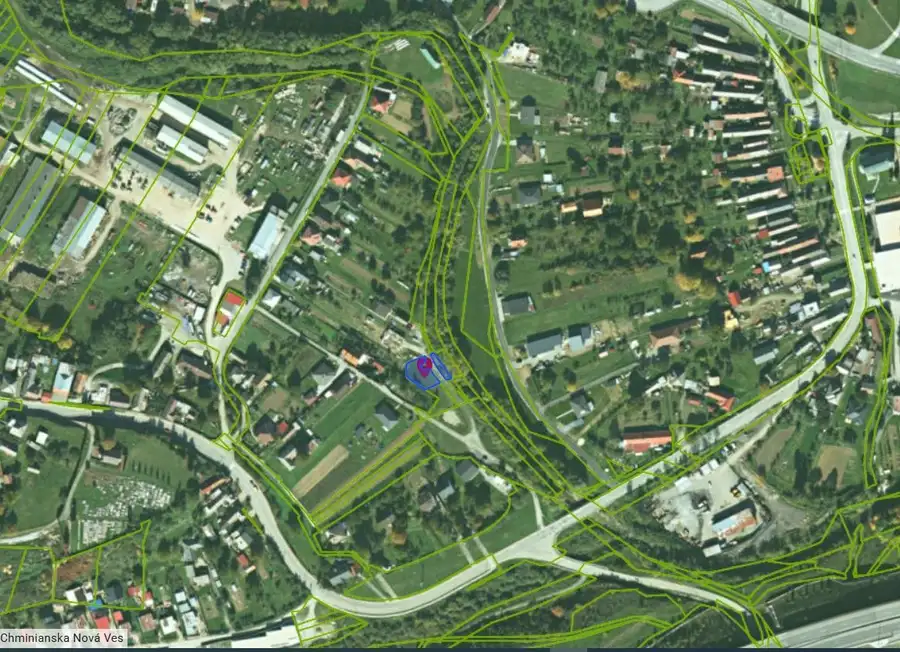
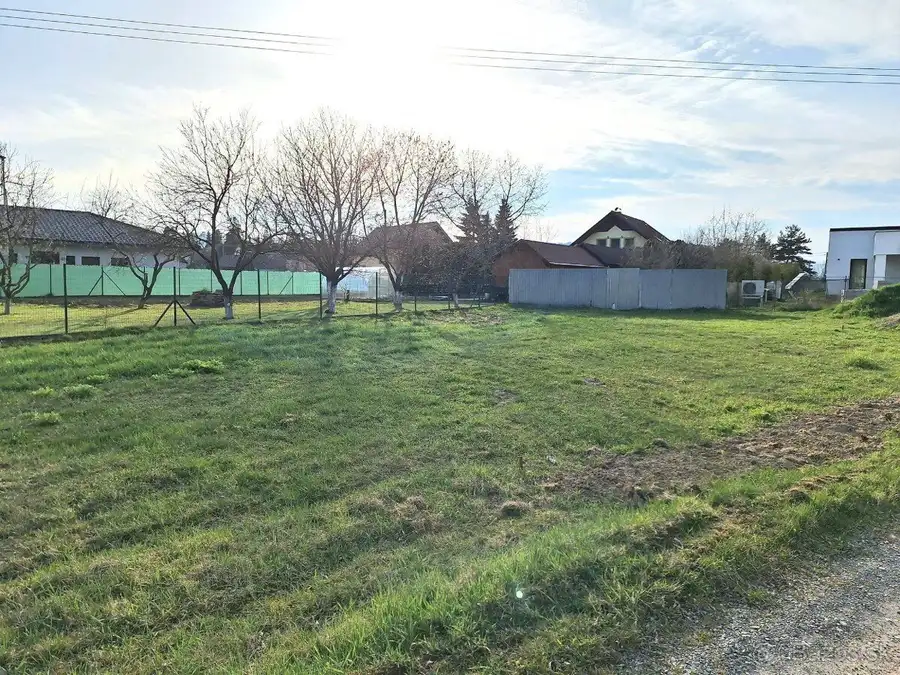
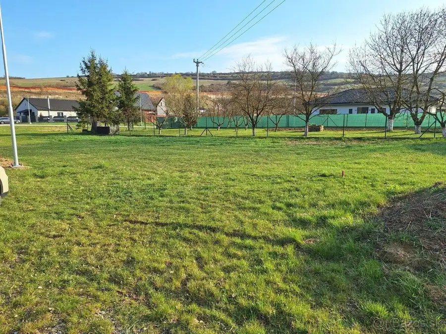
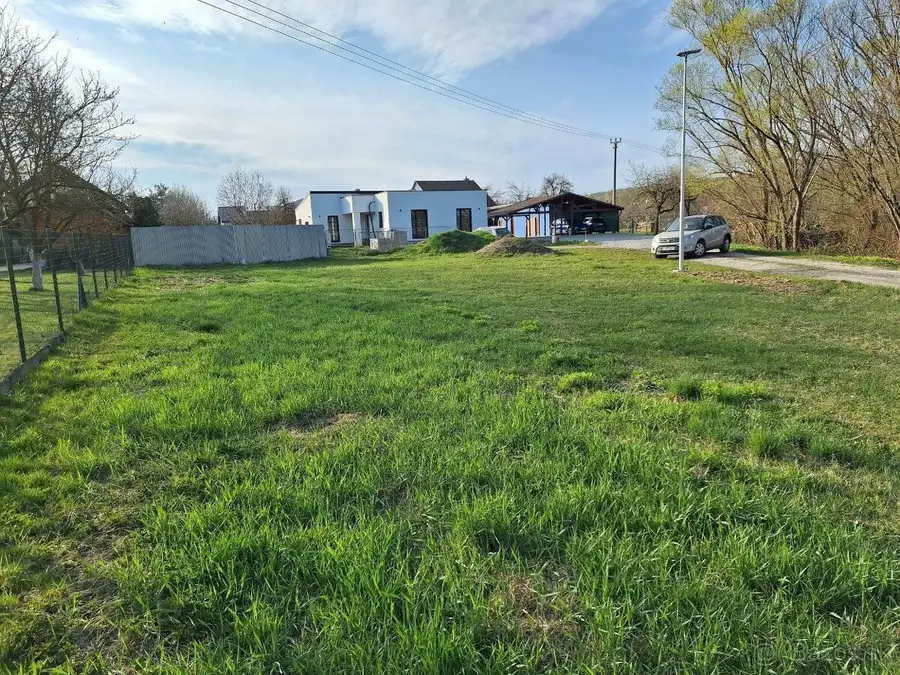
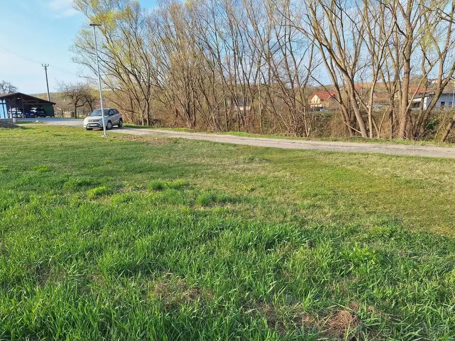
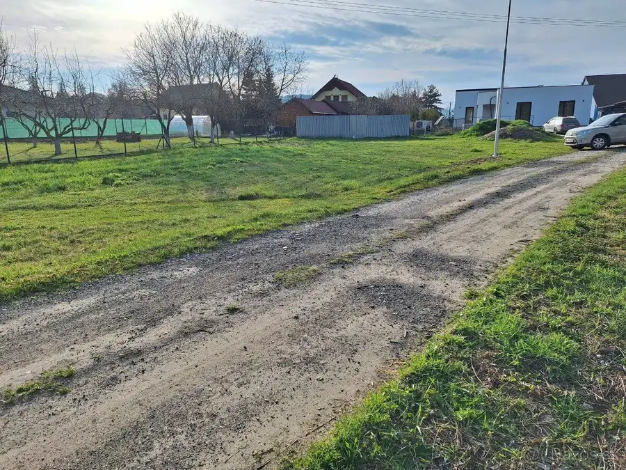
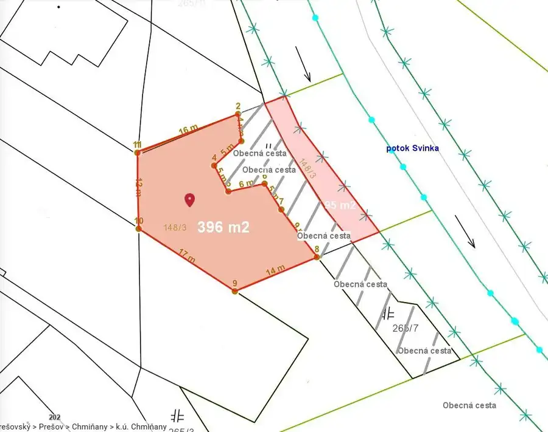

Záhrada pri vode v tichej časti obce Chmiňany, 14km od Prešova.
Chmiňany








- Plocha491 m²
O nehnuteľnosti
Predám záhradu v obci Chmiňany, situovanú v zastavanej a pokojnej časti medzi rodinnými domami, na konci slepej uličky. Lokalita je vzdialená 14 km od Prešova, prístup po D1 do 14 min., vdialenosť od zastávky SAD je cca 420 m.Rovinatý pozemok má výmeru 491 m² a je rozdelený obecnou cestou na dve časti.Väčšia časť (396 m²) lichobežníkového tvaru je vhodná na záhradkárčenie, oddych alebo umiestnenie chatky.Menšiu časť (95 m²) tvorí pás na nábreží riečky Svinka.Pozemok je prístupný po obecnej komunikácii a nachádza sa na rozhraní katastrálnych území Chminianska Nová Ves a Chmiňany.Výhodou je blízkosť strediskovej obce s občianskou vybavenosťou (COOP Jednota) a dobrá dostupnosť do Prešova nielen autom ale aj autobusovou dopravou.Pozemok je vedený ako záhrada v zastavanom území obce, nie je určený na klasickú výstavbu rodinného domu. Vhodný na rekreáciu, záhradkárčenie, prípadne umiestnenie mobilného/kontajnerové domčeka či záhradnej chatky.Bližšie informácie na tel. čísle: 0949 772 893 - Jana Žilková Hudák,email: hudak.jana@allfinreal.sk.
Parametre
- Druh
- Záhrada
- Dátum zverejnenia
- 03. 05. 2026
- Dĺžka pozemku
- 26
- Elektrina
- Nedostupné
- Odpadové vody
- Nedostupné
- Plocha pozemku
- 491 m²
- Plyn
- Nedostupné
- Prístupová komunikácia
- Kamenitá
- Terén pozemku
- Rovinatý
- Typ
- Predaj
- Voda
- Nedostupné
- Územie
- Intravilán
- Šírka pozemku
- 15